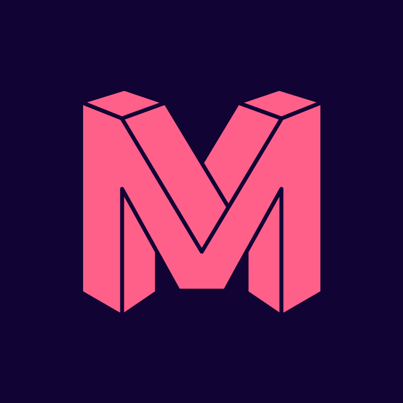

A friendly, do-it-with-me walkthrough for getting Claude properly set up at The Digital Maze. Install the app, write your Instructions for Claude, and stand up your first Cowork Project the way we did Emlyn's. About forty minutes from start to finish.
Claude is, in plain terms, a brilliant new colleague who happens to live inside your laptop. You can ask it to draft a client email, sense-check a campaign brief, or summarise a forty-page report and it will have a proper go at it within seconds. The trick is learning how to talk to it. That is what this little book is for.
Downloaded, signed in with your TDM email, set up the right way.
A one-page profile telling Claude who you are. Used in every chat.
One real Project set up properly, the same way we did Emlyn's.
Plus a tick-box list for your first week so you actually use it.
In order, from page 1 to page 12. Skip nothing. Each page builds on the one before it. If you only have ten minutes today, read up to page 6 and come back later. If you have the full forty, do the lot in one sitting. Have your laptop open while you read. Most pages ask you to actually do something.
If something does not make sense, stop and ask Scott or your team lead. This workbook is meant to feel obvious. If a step feels muddled, that is a workbook problem, not a you problem.
The best way to understand what Claude is for is to see what TDM staff already use it for day-to-day. Six honest examples. None of them are theoretical. Every team has someone doing this kind of work right now.
Paste the latest call notes, ask Claude to draft the follow-up. Sounds like you, not like a robot.
Before you send a brief to a client, ask Claude what is unclear, what is missing, what would push back.
Drop the Otter transcript in. Get a clean summary, decisions, and owner-tagged actions in seconds.
Throw your raw monthly notes at Claude. Ask for the QBR structure, the headlines, the asks.
Claude reads a hundred of your sent emails and produces a tone profile you can reuse across everything.
Paste the deck outline. Ask Claude where the argument is weak and what the client will push back on.
If you are about to spend more than fifteen minutes on something that involves writing, summarising, sense-checking, or structuring, try Claude first. Worst case you save ten minutes. Best case you save an hour.
Claude Desktop has three modes along the top of the window: Chat, Cowork, and Code. Knowing which one to reach for matters. Most TDM staff live in Chat. Cowork is for delegated work. Code is mostly for the dev team.
If you are in SEO, PPC, Projects, Client Services, Sales or Marketing, you will live in Chat and dip into Cowork for the repetitive work. We will set up both in the next few pages.
First job. Get the app on your machine and signed in. Five minutes. The rest of the workbook assumes you have Claude Desktop open in front of you.
Ask Liam. Sign-in problems, plan issues, anything technical. Faster than wrestling with it on your own.
This is the bit that makes Claude actually useful. You write a one-page profile that tells Claude who you are and how you like to work. Claude reads it at the start of every chat. You only do this once. About twenty-five minutes.
Full prompt on the site: setting-up-claude-properly.vercel.app/bootstrapYour profile splits into two files. CLAUDE.md holds the permanent stuff (your role, your style, your rules). Context.md holds the changing stuff (this quarter's priorities). If it will still be true in six months, it goes in CLAUDE.md.
Your Context.md gets a different home. You will drop it into a Cowork Project on page 8.
Now you have Claude installed and your profile in place, let us actually use it. The point of this page is to feel Claude actually working before you do anything more involved. Five minutes.
Paste the prompt below. It checks your Instructions for Claude are actually loaded and gives you a feel for how Claude responds.
That is the whole point. From here on, the only difference is the type of work you give it. The next pages set up Cowork, which is where you delegate the bigger, repetitive jobs.
Cowork is where you let Claude take on real, multi-step work that touches your tools (email, Drive, Slack, calendar). The first project always feels like the trickiest one, so we will do it together. Let Claude do the writing. You just answer a few quick questions.
Full walkthrough on the site: setting-up-claude-properly.vercel.app/setup-coworkNow you have three template files in Claude Chat. Time to save them to your Mac, fill them in for a specific piece of work, and load that work into a real Cowork Project.
Open it. Start a new task inside it. Ask: "What do you know about this project?" If Claude plays back your files accurately, you are sorted. Use this Project for a couple of weeks before adding another.
You are not on your own. TDM has Claude organised in three layers, so when you sit down to work Claude already knows the company, your team, and you. Here is what is already in place and who keeps it up to date.
The paid Claude seat. Owned by TDM, billed centrally by Rob. Suspended the day you leave. Includes Chat and Cowork. Code is added for the dev team.
A shared library of skills, connectors, and reference docs specific to your team (SEO, PPC, Projects, Tech, etc.). Maintained by your team lead. Pulled when you start a session.
Your CLAUDE.md, Context.md, your tone of voice, your Cowork Projects. Lives on your Mac. Yours. Set up across pages 6 and 8 of this workbook.
Each connector lets Cowork reach into a tool you already use. Turn on the ones you actually use, not everything. Each one adds context to every Cowork task.
The core four. Turn these on first. They cover most day-to-day work across every team.
Available on request. Ask Liam to enable them on your account if your team uses them.
If your team coordinates in one of these, add it. Cowork can read tasks and update boards.
The Layer 02 skills and connectors are still being rolled out team by team (SEO first). If your team has not had its kit set up yet, ask Scott. You can still use Chat and your personal Cowork Projects in the meantime.
Five rules to keep in your head from day one, then a tick-box list for your first week so the workbook does not just sit on your desk.
You have done the foundation. The site is where you go deeper when you want to. It has prompts, a glossary, deep-dives on connectors, a troubleshooting page, and recommended tools by team.
Twenty-five sections. Searchable. Updated regularly. Save it to your bookmarks bar.
.vercel.appHow to get the best out of any chat. Specifics over generalities, examples, structure.
How to check what Claude has done, especially in Cowork where actions touch real tools.
The handful of patterns that consistently waste time. Read it before you make them.
What never to share, where things get stored, what to do if you slip up.